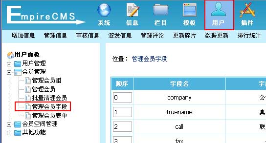
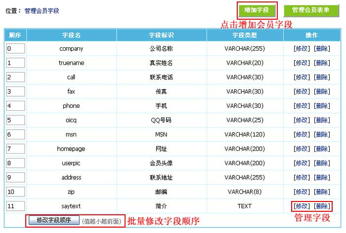
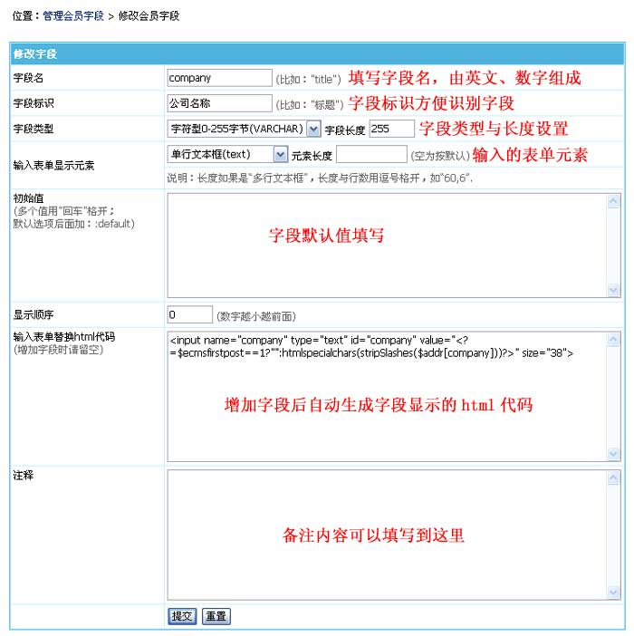

自定义会员字段
本功能为对前台会员的注册资料属性进行管理。
一、登录后台，单击“
用户
”菜单，选择“
管理会员字段
”子菜单，进入管理会员字段界面：

二、进入管理会员字段界面：

三、修改会员字段：

字段名
填写字段名，字段名由英文和数字组成。比如：title。
字段标识
字段标识方便识别字段。比如：标题
字段类型
选择字段的存放类型。
字段长度：
选择字段的存放长度。
输入表单显示元素
选择前台表单录入的方式。
元素长度：
表单元素显示的大小。
初始值
填写字段默认值或选项(多个值用"回车"格开；默认选项后面加：:default)。
显示顺序
会员表单的字段显示顺序越小越前面。
输入表单替换html代码
增加字段后自动生成字段显示的html代码内容，增加字段时一般不设置，可增加字段后再修改。
注释
填写备注内容。
相关链接：
1、
帝国CMS功能解密之：会员自定义字段搜索